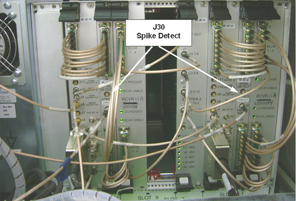
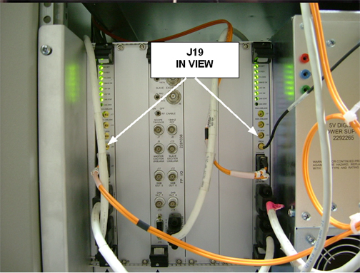
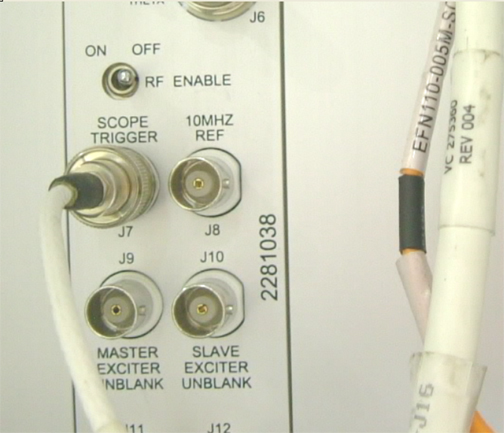
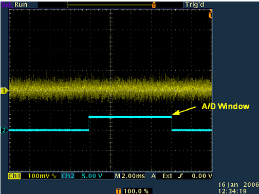
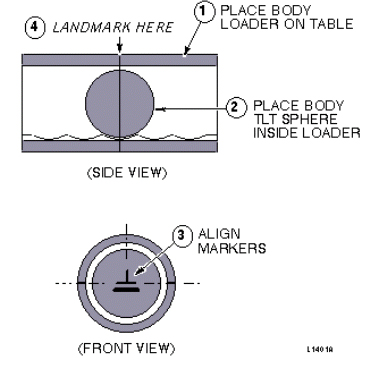
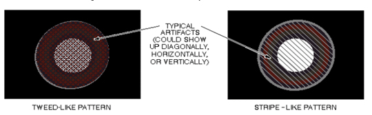

Proprietary to General Electric Company
Direction 5440000, Rev# 5
Signa HDxt Service Methods
Module Version 2.0, Version Date 6/2/10
Proprietary to General Electric Company |
| Required Persons | Preliminary Reqs | Procedure | Finalization |
|---|---|---|---|
| 1 | Not Applicable | 60 mins | Not Applicable |
| Item | Qty | Effectivity | Part# | Manufacturer | |
|---|---|---|---|---|---|
| 100 MHz storage oscilloscope, Tektronix® 468 or equivalent | 1 | - | 46-183029P61 | - | |
| - | - | - | 46-183029P64 | - | |
| TPS RF Service Interface Kit | 1 | - | 46-301927G1 | - | |
| SMB-Femal to BNC-Male Test Cable (usually in item 2, above) | 1 | - | 46-301549P5 | - | |
| Body TLT Sphere Phantom | 1 | - | 46-265635G6 | - | |
| Long Body Loader or SPT Body Loader | 1 | - | 46-287902G1 | - | |
| - | - | - | 2135652-2 | - | |
| ||||
| POISON HAZARD! | ||||
| THE PHANTOM CONTAINS NICKEL, A SUSPECT CARCINOGEN. | ||||
| DO NOT INGEST. DISPOSE OF AS A HAZARDOUS WASTE ACCORDING TO STATE AND FEDERAL REGULATIONS. |
| ||||
| Possible Equipment Damage! Remove the Head Coil from the Patient Table before performing this procedure. | ||||
Remove the front panel from the Systems Cabinet.
Disable the RF Output from the RRF Master Exciter by setting the RF Out toggle switch (located on the RRF front panel I/O board) to the Disable position.
Connect the oscilloscope power plug to the service outlet or power strip inside the system cabinet to prevent ground loops that may cause higher floor noise. .
Connect the oscilloscope input channel 1 to J30, Spike Detect, on the RRF UTNS, using test cable 46-301549P5. (See Illustration 1.)
| NOTE: | Illustration 1 shows a 16 channel configuration with a second UTNS installed in Slot 3. Connection to either UTNS is suitable for this test. |
Illustration 1: Location Of UTNS J30 Spike Detect

Connect the oscilloscope input channel 2 to J19, IN VIEW, on the Receiver. See Illustration 2.
| NOTE: | Illustration 2 shows a 16 channel configuration with a second Receiver installed in Slot 1. Connection to either Receiver is suitable for this test. |
Illustration 2: Location Of Receiver J19 In View

c. Connect the oscilloscope External Trigger to J7 Scope Trigger on the RRF Front Panel I/O board. See Illustration 3.
Illustration 3: RF Enable And Scope Trigger

Set up the oscilloscope as follows:
Channel 1 - 100 mV/div, 1 mW input, AC coupled, 1 meg ohm impedance.
Channel 2 - 5 V/div, 1 mW input , DC coupled, 1 meg ohm impedance.
Time Base - 2 msec/div.
Trigger - auto, external.
At the operator workspace, select the Scan icon on the desktop control panel.
If necessary, exit out of any previous exams by selecting [End Exam].
Click on [New Pt] and enter the following:
ID: geservice
Name: spike noise
Weight (lb.): 111
Remove all phantoms from the patient table. This is an empty bore test.
Place the head coil without a phantom on the cradle. Landmark on the center of the head coil. At the keypad on the front magnet enclosure, press <LANDMARK>, and <MOVE TO SCAN>.
The following three sub-steps are proprietary and only available for GE use, or to sites with a valid Advanced Service Package Limited License. The non-proprietary protocol setup procedure is listed in Table 1.
Set Patient Protocols to Service.
In the Protocol field, select either 1.5T Spike Noise or 3.0T Spike Noise and press <Enter>. Make sure the protocol matches the magnetic field strength of the system.
Click on [Accept] to load the protocol.
Click on [Save Series] and then press [Move to Scan].
| NOTE: | Use Series 2-8 per later procedure steps. |
Table 1: Series 1 - 8 Scan Parameters
| Series 1: | Series 2: | Series 3: | Series 4: | Series 5: | Series 6: | Series 7: | Series 8: | |
| Head | Head | Head | Head | Body | Body | Body | Body | |
| SCAN PARAMETER | ||||||||
| Plane: | Axial | Axial | Sagittal | Coronal | Coronal | Sagittal | Axial | Axial |
| Sequence: | 2D GRE | 2D GRE | 2D GRE | 2D GRE | 2D GRE | 2D GRE | 2D GRE | 2D GRE |
| ACQUISITION TIMING | ||||||||
| Freq: | 256 | 256 | 256 | 256 | 256 | 256 | 256 | 256 |
| Phase: | 256 | 256 | 256 | 256 | 256 | 256 | 256 | 256 |
| NEX: | 1 | 1 | 1 | 1 | 1 | 1 | 1 | 1 |
| Phase FOV: | 1 | 1 | 1 | 1 | 1 | 1 | 1 | 1 |
| Locs Before Pause: | 0 | 0 | 0 | 0 | 0 | 0 | 0 | 0 |
| Freq Dir: | A/P | R/L | A/P | R/L | R/L | S/I | R/L | A/P |
| SCAN TIMING | ||||||||
| TE: | 10 | 10 | 10 | 10 | 10 | 10 | 10 | 10 |
| TR: | 20 | 20 | 20 | 20 | 20 | 20 | 20 | 20 |
| Flip Angle: | 10 | 10 | 10 | 10 | 10 | 10 | 10 | 10 |
| Bandwidth: | 15.63 | 15.63 | 15.63 | 15.63 | 15.63 | 15.63 | 15.63 | 15.63 |
| SCANNING RANGE | ||||||||
| FOV: | 24 | 24 | 24 | 24 | 24 | 24 | 24 | 24 |
| SL THK: | 5 | 5 | 5 | 5 | 5 | 5 | 5 | 5 |
| Spacing: | 1.5 | 1.5 | 1.5 | 1.5 | 1.5 | 1.5 | 1.5 | 1.5 |
| Start: | I60 | I60 | R60 | P60 | P60 | R60 | I60 | I60 |
| End: | S60 | S60 | L60 | A60 | A60 | L60 | S60 | S60 |
| # Of Slices | 20 | 20 | 20 | 20 | 20 | 20 | 20 | 20 |
At the Operator Workspace, click on [Manual Prescan] and set R1 =11, R2=15, TG=0 and select [Scan TR].
Go to the oscilloscope and adjust the scope trigger to display one cycle of the A/D window on the scope channel 2. See Illustration 4.
Illustration 4: Oscilloscope Display For A/D Window

Press the [PAUSE SCAN] button on the console keyboard. Press the <FAN> button on the magnet enclosure to turn off the patient comfort fan (the fan turns on automatically with scan software).
| NOTE: | Ignore the first 30 seconds of data. |
The MGD/RRF are now in the receive mode and any noise can be observed at the UTNS J30 Spike Detect port. Scope must be in auto trigger mode.
Put the scope in continuous acquisition mode. The method for doing this will vary with scope type. Clear the oscilloscope display and ensure the trigger is in the auto position.
Observe the scope display for about two minutes. The noise envelope (channel 1) is typically 200 mV p–p. Verify that there are no spikes >0.5 Nenv (where Nenv is the noise envelope peak to peak value) above the noise envelope. See Illustration 5.
Illustration 5: Spike Noise Scope Waveform (Paused Prescan)

| NOTE: | Ideally, there should be no spikes beyond the envelope. Any spikes present indicate that a connection is loose, or a component is bad (e.g., intermittent connection of power cable to a shield cooler cold head, or copper fingers on exam room door are damaged). Noise spikes that are greater than the spike spec create images with corduroy-like artifacts. Noise spikes that are presently less than the spike spec will probably get worse over time. |
| NOTE: | If there are no spikes present, and you are in doubt whether the setup is working, you can simulate an RF leak by opening the exam room door, or by turning the room lights on or off if the site is RF quiet. Clear the oscilloscope display and observe the new waveform on the display. You should now see noise spikes beyond the waveform envelope. Don't forget to close the exam room door when you are finished. |
Press the <FAN> button on the magnet enclosure to turn on the patient comfort fan. Clear the oscilloscope display and ensure that the trigger is in the Auto position. Observe the oscilloscope display for about two minutes. The noise envelope (channel 1) should remain as described in Step above.
Clear the oscilloscope display and change the trigger from Auto to Normal.
Press the <FAN> button on the magnet enclosure to turn off the patient comfort fan.
Press the <START SCAN> button on the console keyboard to resume prescan. Click on [Scan T/R].
Observe the scope display after two minutes. The noise envelope (channel 1) should be approximately 200 mV. Verify that there are no spikes >0.5 Nenv (where Nenv is the noise envelope peak-to-peak value) above the noise envelope in the region of interest (except for maybe a beginning and ending transition spike). See Illustration 5.
| NOTE: | The Region of Interest extends beyond when the observed Data In Window signal is high because the Data In Window position varies with TE. The Transition Spike (not always present) occurs when the RF subsystem transitions from transmit to receive frequency; it occurs ~1 msec prior to the Data In Window. (The frequency transition point can be confirmed by viewing the DDS OUT signal on the Exciter Board.) |
| NOTE: | If the spike noise appears only during prescan, the problem is more likely to be a loose connector, freely hanging cables near the magnet, poorly soldered components, or coil mounting hardware. Anything that is subject to vibration from gradient activity should be investigated. |
Click [Done].
Click on [New Series]. Set up scan prescription for series #2 scan per notes and Table 1, then repeat steps Step .
Repeat the previous step until all head prescans (series #1 through #4) have been completed
Disconnect the oscilloscope from J30 on the RRF UTNS from J19 on the Receiver and J7 on the Exciter. Restore all cables to their normal configuration.
Reset the RF Out switch on the RRF Front Panel I/O board to the Enable (left) position.
Install the front cover panel on the Systems Cabinet.
Setup using SPT Loader: Position the SPT body loader and TLT sphere on the table and landmark per Illustration 6.
Illustration 6: SPT Body Loader And TLT Phantom Setup

Setup using Long Body Loader. Position the body TLT sphere in the center of the long body loader and landmark per Illustration 7
Illustration 7: Long Body Loader And TLT Phantom Setup

Click on [New Series] and Last Series from the procedure in Step .
At the front enclosure, press< LANDMARK>, then <MOVE TO SCAN>.
Click on [Save Series], then [Prepare to Scan].
Click on [Scan] (system auto prescans first).
Display and examine each of the twenty images for tweed-like or stripe-like artifacts. See Illustration 8.
Illustration 8: TLT Sphere With Typical Artifacts

No finalization steps.